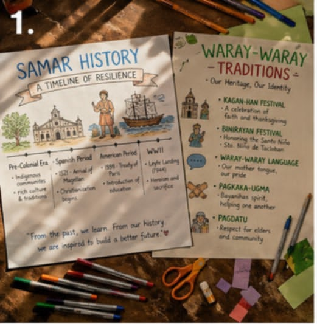
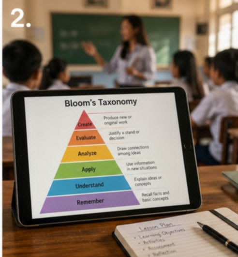
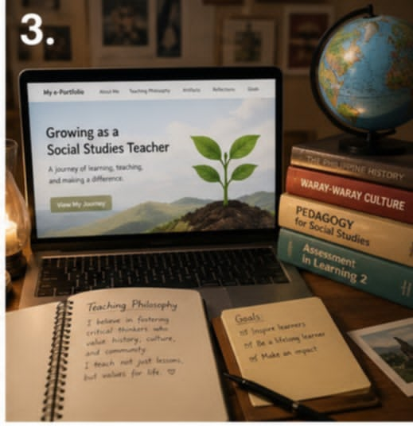
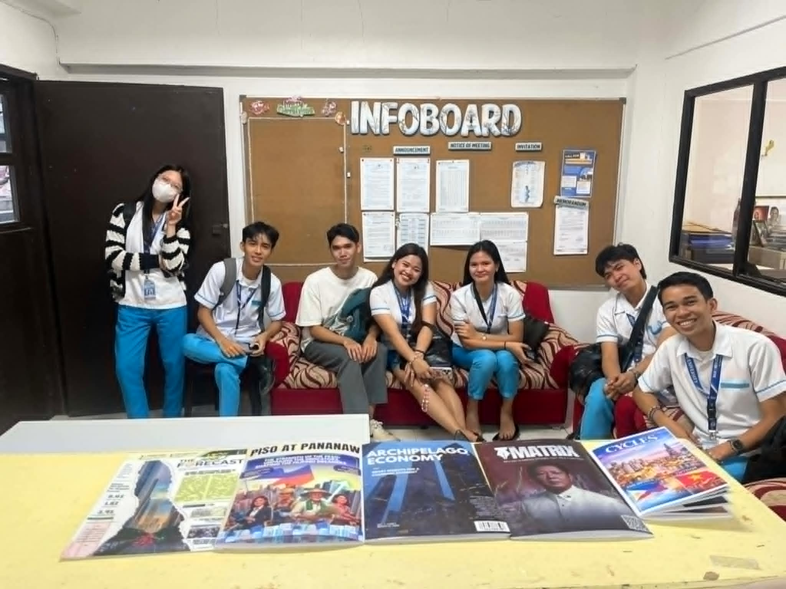

Jasmine Bracamonte
Taking the
I'm an enthusiastic and dedicated second-year Bachelor of Secondary Education Major in Social Studies student at Samar State University. I am passionate about social sciences, education, and leveraging technology to create engaging learning experiences.

Do you want to know more about me?
Hi, I am Jasmine Bracamonte! I am currently a second-year student at Samar State University, studying to become a high school Social Studies teacher. I have a deep love for history and how our society works especially our own local Samar traditions and culture and I want to share that excitement with my future students. Instead of just relying on plain textbooks, I enjoy finding creative ways to use technology, like designing colorful infographics and presentations, to make my lessons fun, interactive, and easy for students to understand.
Life isn't just about school for me, though. I live in Barangay Cagtutulo, Tarangnan, where I proudly serve and help my community as the SK Secretary. Balancing my college studies, making lesson plans, and doing my community duties keeps me very busy! Whenever I finally get some free time to relax and recharge, I love kicking back to watch my favorite Korean dramas or scroll through TikTok. Sometimes, I also like to take a complete break from my screens to just quietly draw or cook a good meal.
What I am good at
MS Word
Documentation, drafting and editing research papers and reports.
MS PowerPoint
Creating and designing slides for academic presentations.
MS Excel
Data entry, organization, and basic spreadsheet management.
Canva
Graphic design for posters, infographics, and creative layouts.
Google Sheets
Collaborative data tracking and spreadsheet management online.
ChatGPT
AI-assisted research, content writing, and problem solving.
My experiences
 2026 (Present)
2026 (Present)
Demo Teaching
SSU: Deparment of EducationConducted a teaching demonstration at the SSU Department of Education, including the preparation of instructional materials and a formal presentation
 2026 (Present)
2026 (Present)
Community Service
Barangay CanlapwasOur ssection imerse in a community service in barangay Canlapwas. We distribute pamphlets and poster regarding to waste management in the community.
 2026 (Present)
2026 (Present)
Seminar Workshop
SSU, function roomThe Social Studies Faculties conducted a seminar workshop regarding how to formulate a lesson plan for social studies students
 2023 - 2024
2023 - 2024
Joint Delivery Voucher Program (JDVP)
PHTTIA tuition assistance program for Grade 12 learners in public Senior High School Technical-Vocational-Livelihood (SHS-TVL) tracks. It allows students to take specialized training at qualified private institutions or technical vocational institutions (TVIs) to address school resource gaps.
My Learning Journey
A collection of personal reflections on technology, teaching, and growth as a pre-service educator.

I decided to make physical charts and visual aids about Samar history and Waray-Waray traditions for my non-digital instructional materials. At first I was a bit worried that it would take a time to make them by hand. I found that making these materials was actually very rewarding. The good thing about these materials is that they do not need an internet connection. However they are not as interactive as presentations. I realized that conventional materials are still very important for students who do not have access to a lot of resources. I think that as an educator I should not stop using traditional methods just because technology is available. My plan is to have a collection of physical materials to use with my digital lessons so all my students can learn regardless of the technology they have.

When I was looking for ICT tools to use for teaching I focused on applications that could help me make assessments and use concepts like Blooms Taxonomy in my lesson plans. I felt overwhelmed by the number of apps but I became more confident as I started testing them out. I liked that interactive platforms could grab students attention. I noticed that the technology could sometimes distract from the lesson. I realized that I need to choose the tool for each lesson, rather than just using technology for the sake of it. I think that my teaching methods should always come first and then I can choose the technology that supports them. My plan is to evaluate any new ICT tool before I use it with my students.

Making this e-portfolio was a valuable experience for me. I felt proud of myself as I put together my coursework even though I was initially intimidated by the aspects of designing the layout. Looking back this process helped me see how much I have grown as a pre-service Social Studies teacher. I realized that an e-portfolio is not a digital folder for my assignments; it is a living record of my teaching philosophy. I think that keeping a record of my progress helps me see the bigger picture of my education and abilities. My plan is to keep updating this site even after the semester ends and use it as a platform as I start my teaching career.

I recently used digital tools when my group was working on the "Piso at Pananaw" economics magazine project. I enjoyed working on shared documents with my classmates even though it was sometimes frustrating when our edits clashed. I saw how these platforms made our teamwork efficient and erased barriers. However I realized that having the tools is not enough; we need to be organized to avoid chaos and duplicated effort. I think that successful digital collaboration relies on established communication protocols. My plan is to establish digital etiquette and assign roles from the start to make our future collaborations more efficient.
Reflecting on literacy made me think about my own online habits. I felt challenged when evaluating the credibility of sources and I realized how easy it is to fall prey to misinformation. The internet provides access to a lot of data, which is great for researching topics. However there is a lot of content online. I realized that being digitally literate is not about knowing how to use devices; it is about critical thinking and information hygiene. I think that as an educator it is essential that I master this skill. My plan is to refine my media literacy and teach my students how to critically evaluate information so they can be responsible digital citizens.
Contact Me
If you have any further questions or concerns, feel free to reach out to me.
Location
Brgy. Cagtutulo, Tarangnan, Samar